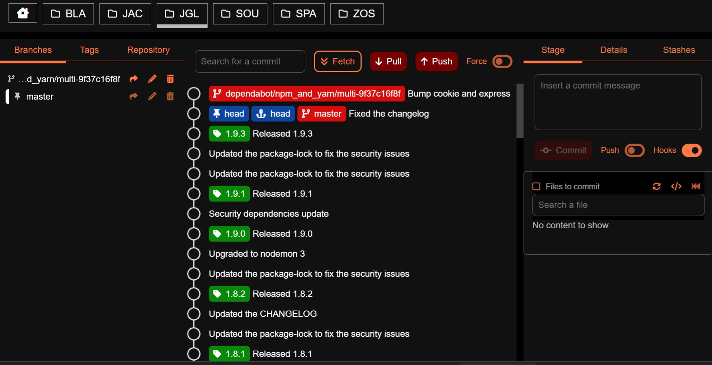
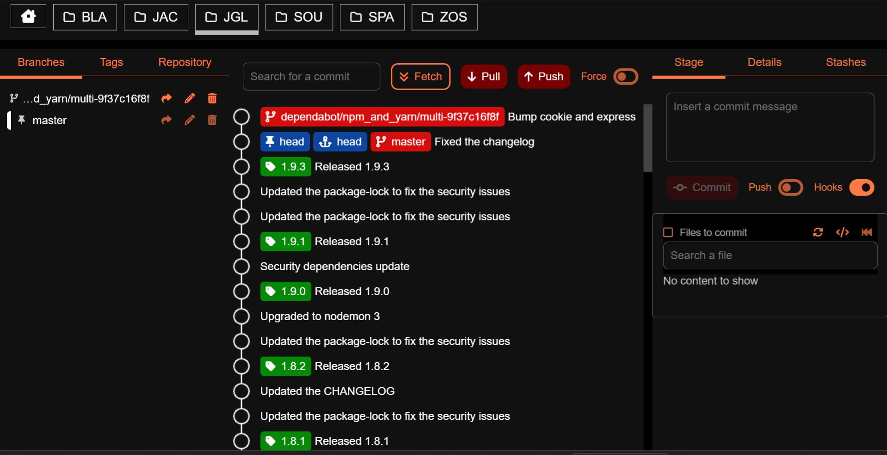

SourceCode is a git client designed to provide a clean-view and confortable management of the repositories.
The main features are:
- Organize multiple repositories
- Clean history graph
- Branches management
- Tags management
- Stashes management
- Stage management
- Merge, rebase and reset.
- Remote SSH control
- Accessible
- Currently it's supported only a single "origin" remote which cover most of the use cases
- SSH is the only supported authentication method
- In order to reduce the usual operations, the app sync all the local operation with the remote repository. This type of design is not suited for offline operativity
- Large repository are not supported and the loading is blocked. (hundreds of regs)
Disclaimer
The software is provided "As is", without warranty of any kind, Express or implied, including but not limited to the warranties Of merchantability, fitness for a particular purpose and Noninfringement. In no event shall the authors or copyright Holders be liable for any claim, damages or other liability, Whether in an action of contract, tort or otherwise, arising From, out of or in connection with the software or the use or Other dealings in the software.